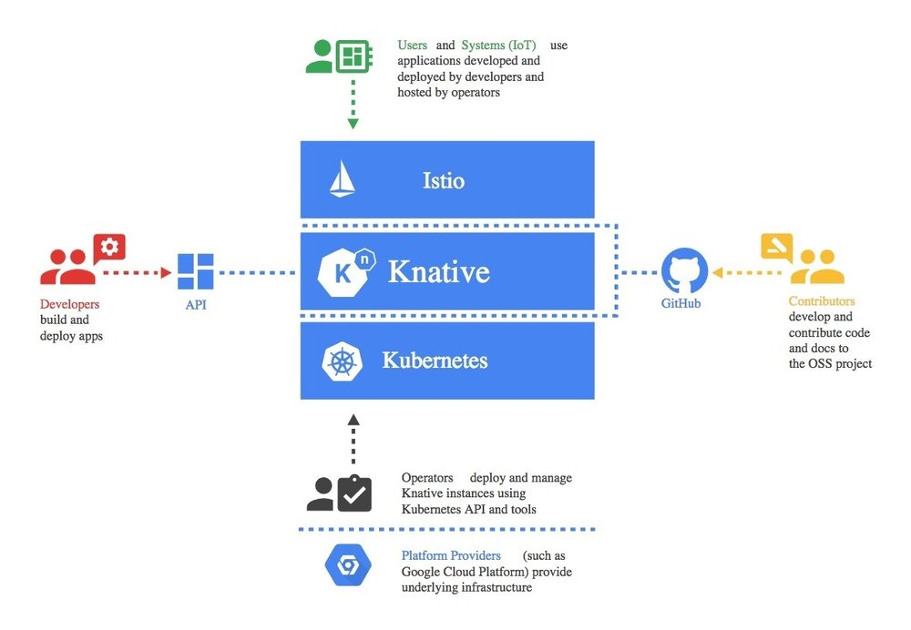
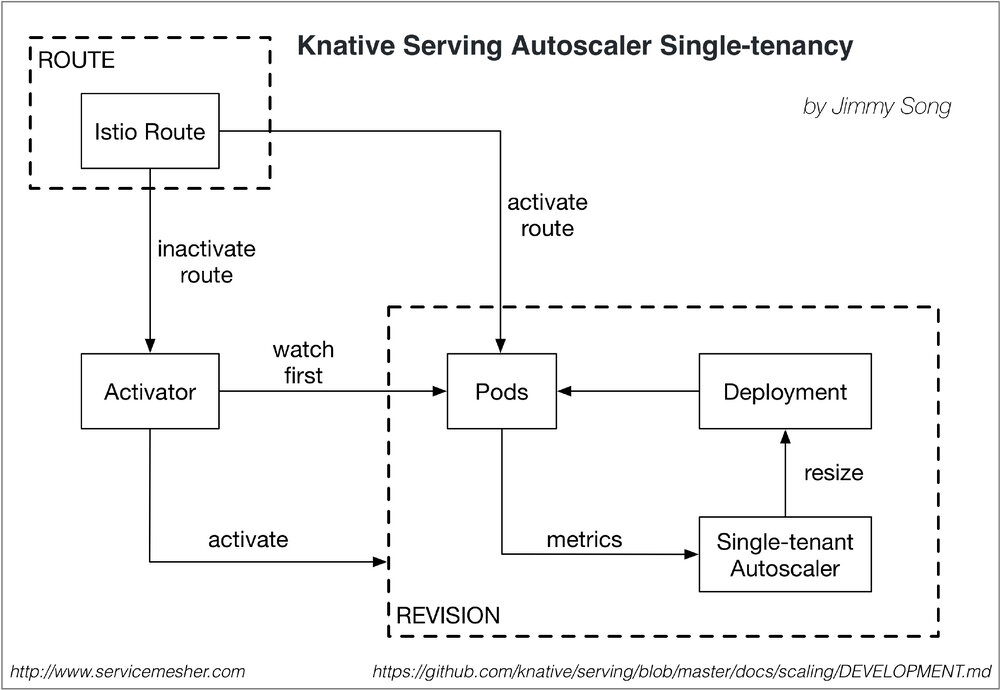

我们都是知道Kubernetes中个资源对象叫 autoscaler，该对象在serverless架构中更是不可或缺，有了它可以负责应用的自动水平伸缩，用户再也不用关心示例的个数和资源消耗，本文是来自阿里巴巴UC事业群基础研发部的陈有坤同学对Knative的解析之autoscaler部分，还有大量的解析等待放出，起关注本站的后续内容。
Knative是一款基于Kubernetes的平台，用来构建、部署和管理现代serverless应用的框架。该框架试图将云原生应用开发的以下三个领域的最佳实践结合起来：
- 构建容器（和函数）
- 为工作负载提供服务（和动态扩展）
- 事件
Knative是由谷歌与Pivotal、IBM、Red Hat 和SAP紧密协作开发的。
Knative构建在Kubernetes和Istio之上，它的设计考虑到了多种角色通过该框架进行交互，包括开发人员、运维人员和平台提供者。

Knative所涉及的角色（图片来源于Knative GitHub仓库）
Knative致力于提供可重用的“通用模式和最佳实践组合”实现，目前可用的组件包括：
以上内容引用自： InfoQ | 谷歌发布Knative：用于构建、部署和管理Serverless工作负载的Kubernetes框架
以上是对Knative的基本介绍，关于Knative的更多信息大家可以关注其GitHub：https://github.com/knative，我们都是知道Kubernetes中个资源对象叫autoscaler，该对象在serverless架构中是不可或缺的，有了它可以负责应用的自动水平伸缩，用户再也不用关心示例的个数和资源消耗，下文是来自阿里巴巴UC事业群的陈有坤同学对Knative的解析。
下面首先解析的是Serving中的Autoscaling组件，该组件的功能是根据网络流量来自动伸缩应用实例的个数。
Knative是如何做伸缩容的？
处理伸缩容问题，首先要解决的问题是根据什么指标判断伸缩容？cpu、内存、请求数？这里knative使用的是请求数。
其次是伸缩多少的问题。
Knative的伸缩是依赖修改deployment的replica数实现的。
如何采集请求数？
启动revision的pod时，也会启动一个autoscaler（一个knative revision只启动一个autoscaler），autoscaler自己本身也会scale到0，用于接收请求数统计和处理伸缩容。
业务pod中，会注入queue-proxy sidecar，用于接收请求，在这里会统计并发数，每秒向autoscaler汇报，接收到的请求会转发给业务container。
注：单租户模式下一个revision启动一个autoscaler，多租户共用一个autoscaler
计算需要pod的个数？
autoscaler接收到并发统计的时候，会根据算法计算需要的pod个数。
算法中有两种模式，分别是panic和stable模式，一个是短时间，一个是长时间，为了解决短时间内请求突增的场景，需要快速扩容。
文档中描述的算法是，默认的target concurrency是1，如果一个revision 35QPS，每个请求花费0.25秒，Knative Serving 觉得需要 9 个 pod。
ceil(35 * .25) = ceil(8.75) = 9
Stable Mode（稳定模式）
在稳定模式下，Autoscaler 根据每个pod期望的并发来调整Deployment的副本个数。根据每个pod在60秒窗口内的平均并发来计算，而不是根据现有副本个数计算，因为pod的数量增加和pod变为可服务和提供指标数据有一定时间间隔。
Panic Mode （恐慌模式）
Panic时间窗口默认是6秒，如果在6秒内达到2倍期望的并发，则转换到恐慌模式下。在恐慌模式下，Autoscaler根据这6秒的时间窗口计算，这样更能及时的响应突发的流量请求。每2秒调整Deployment的副本数达到想要的pod个数（或者最大10倍当前pod的数量），为了避免pod数量频繁变动，在恐慌模式下只能增加，不会减少。60秒后会恢复回稳定模式。
autoscaler单租户图

上图基于 https://github.com/knative/serving/blob/master/docs/scaling/DEVELOPMENT.md 绘制。
模式
const (
// 每个pod实例同时只处理一个请求
RevisionRequestConcurrencyModelSingle RevisionRequestConcurrencyModelType = "Single"
// 每个pod实例同时处理多个请求
RevisionRequestConcurrencyModelMulti RevisionRequestConcurrencyModelType = "Multi"
)
配置
apiVersion: v1
kind: ConfigMap
metadata:
name: config-autoscaler
namespace: knative-serving
data:
# Static parameters:
# 期望每个pod并发请求数
multi-concurrency-target: "1.0"
# 如果是单个并发，值要接近1.0
single-concurrency-target: "0.9"
# stable窗口时间，计算平均并发会用到。如果进入panic模式后，经过stable窗口时间也会恢复stable
stable-window: "60s"
# 如果平均并发在panic窗口时间内达到2倍目标并发，autoscaler进入panic模式。
# 在panic模式下，自动伸缩按在panic窗口时间的平均并发来操作。
panic-window: "6s"
# 最大增长比例，每次调整会根据并发计算增长比例，最大增长不超过这个值
max-scale-up-rate: "10"
# 计算并发值的参数，每一段时间得到最大并发，作为一个bucket，最后汇报的时候，
# 平均并发 = 各个bucket最大并发之和 / 总bucket数，汇报间隔是1秒（hard coded）
concurrency-quantum-of-time: "100ms"
# 是否开启缩容到0
enable-scale-to-zero: "true"
# 实验性：开启垂直扩容
# Requires a VPA installation (e.g. ./third_party/vpa/install-vpa.sh)
enable-vertical-pod-autoscaling: "false"
# 如果开启了enable-vertical-pod-autoscaling，这个值就会替代multi-concurrency-target，
# 如果成熟了后期会变成默认值
vpa-multi-concurrency-target: "10.0"
# 多长时间调整一次
tick-interval: "2s"
# Dynamic parameters (take effect when config map is updated):
# 空闲多长时间缩容到0
scale-to-zero-threshold: "5m"